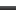
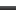

The display of data by cycle gives the possibility to compare easily data between two segments or joints (e.g. comparison of the left and right knee joint angles). However, it implies that you specify the beginning of the cycle and the end the cycle. Even if several softwares already propose to visualize data by cycle, you can be limited by the definition of the proposed cycle. For example, you can analyze only full gait cyle with specific events to use.
To make up this limitation, Mokka introduces the "cycle definition" which gives you access to several option to create cycle display in chart adapted to your analysis.
To access to the cycle definitions, you can use the menu Settings > Horizontal Axis Unit > Cycle > Manage Cycle Settings. It will open the Chart's options which contain a "Cycle settings" section. This section lists the available settings, and give you the possibility to add ( ) a new definition, to remove () or to edit (
) a new definition, to remove () or to edit ( ) the selected one.
) the selected one.
To create a new cycle definition, click on the add () button. Then a dialog box appears with the possibility to set the events to use for the beginning and the end of a cycle as well as the mechanism used to match the data plotted in a chart with the cycle. These options are available for the events with the context "Left", "Right" and "General".
- The General section contains the name of the definition shown in the menu of Mokka, and the label of the X axis written in the chart when you display data by cycle (for example "Gait Cycle, %GC").
- The Cycle calculation section section permits to choose the method or the calculation of the cycle (i.e. the corresponding percentage of the gait cycle from a time sample). In mokka 0.6. you can only normalize data, but for example the "Time-Wraping" method or the normalisation of sub-phases could be added later).
- The Cycle definition section set the events to create cycle for the left context, the right context and the general context. At least one of those are needed to create a new definition. Note: The list of events in the combo box is set from the existing events in your acquisition. If you don't have any event, by default, the event "Foot Strike" and "Foot Off" are added to the list.
- The Data label matching section defines the rules to associate the data to the plot with a cycle definition. For example, if you select the "Right label" to start by "Right", then points dropped in chart with label like "RightKneeAngle", "RightHipPower" will use the right cycle information to set their X axis. In case, the selected data to display doesn't match the right rule and the left rule, the software try to set X axis data from the general cycle information if defined. If the latter is not defined, then a dialog box is displayed and mentioned that no cycle information was found for this data.
To give you the example of the default cycle defintion "Cycle: Full Gait", the beginning and the end of the cycle is set to the "Foot Strike" event. So the data between two "Foot Strike" events will define a cycle. If you want to display only the stance phase of the gait cycle, then you only have to define the beginning of the as the "Foot Strike" event and the end of the cycle as the "Foot Off" event.
You can finally display data in charts by cycle as the figure below.